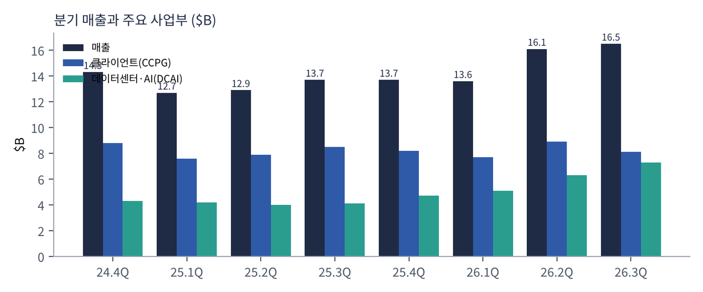
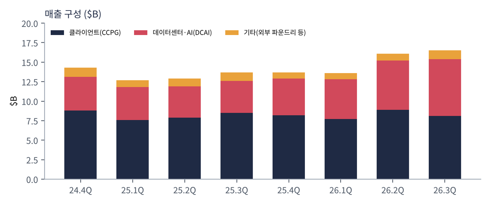
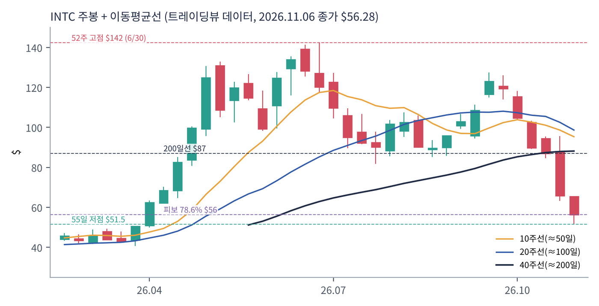
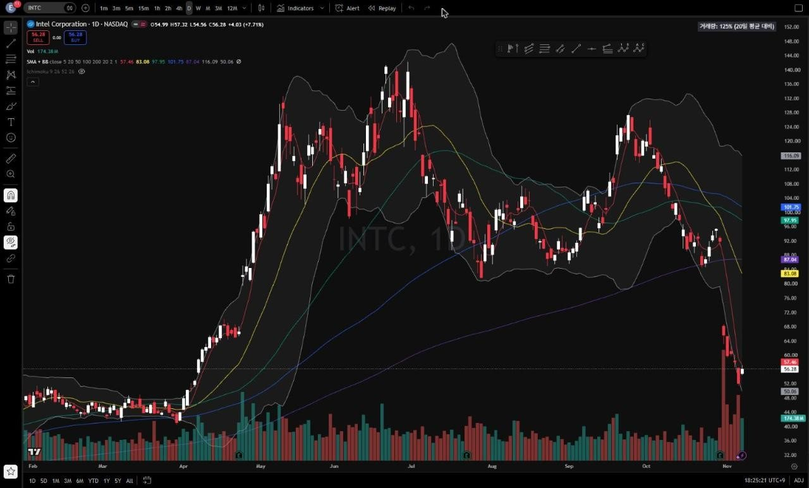
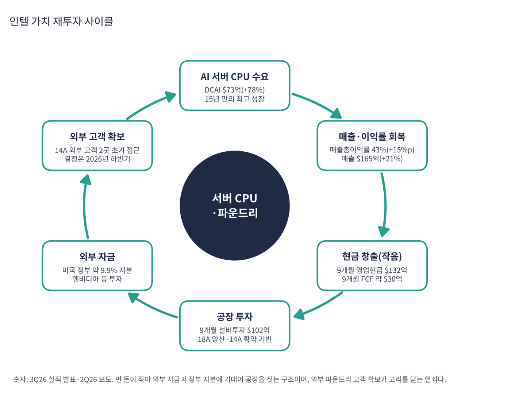

인텔은 PC와 서버용 x86 CPU를 만드는 세계 최대 회사이자, 칩을 직접 생산하는 몇 안 되는 종합 반도체 회사(IDM)다. 2024년까지 공정 경쟁에서 TSMC에 밀리고 대규모 적자를 내며 위기를 겪었다. 2025년 립부 탄 CEO 취임 뒤 인력을 약 31% 줄이고(10.9만 → 7.5만 명 목표) 미국 정부·엔비디아 등의 투자를 받아 재건 중이다.
| 항목 | 내용 |
|---|---|
| 종목 | Intel Corporation (INTC) · NASDAQ · 반도체 · 1968년 설립 · 본사 캘리포니아주 산타클라라 |
| 시가총액 | 약 $299B (트레이딩뷰, 11/6 종가 $56.28) · TTM 순손실로 PER 산출 불가 |
| 최근 분기(3Q26) | 매출 $16.5B(+21%), 매출총이익률 43.0%, 영업이익률 15.3%, 순이익 $3.3B, EPS $0.60 / 비GAAP EPS $0.52 |
| 다음 분기 가이던스 | 4Q26 매출 $15.0~16.0B(3분기보다 낮음), GAAP 매출총이익률 37.1%, GAAP EPS $0.10 / 비GAAP $0.25 |
| 주요 주주 | 미국 상무부 약 9.9%(진입가 약 $20.47의 에스크로 주식). 주가가 오르면 이 의무의 평가손실이 커지는 구조 |
| 내부자 매수 | 탄 CEO가 11/4 15만 주를 평균 $64.73에 매수(트레이딩뷰 뉴스 요약 기준) |
| 다음 실적 | 4Q26: 2027년 1월 하순 발표 예정 |
| 직책 | 인물 | 역할·특징 |
|---|---|---|
| CEO | 립부 탄 | 2025년 취임. 인력 31% 감축, 제온 공급 확보를 "최우선 과제"로 제시, 18A 양산과 14A 확약 기반 투자 추진 |
| CFO | 데이비드 진스너 | "데이터센터 매출이 15년 만에 가장 강하게 성장"(3Q26). 4분기 가이던스와 비용 구조 설명 |
경영 스타일: '구조조정 + 확약 기반 투자'. 인력과 비용을 줄이고(영업비용 $4.8B → $4.5B), 14A는 외부 고객 확약 전에는 증설하지 않는 방식으로 투자 위험을 줄인다. 대신 미국 정부·엔비디아 같은 외부 자본에 기대어 재건한다.
18A(리본펫·파워비아) 공정으로 만든 PC용 팬서 레이크가 출시됐고, 서버는 제온 공급 확대가 핵심이다. AI 가속기는 2026년 하반기 크레센트 아일랜드(LPDDR5X 480GB 공랭식 추론 GPU)가 시험대다. 포베로스·EMIB 첨단 패키징도 외부 고객에 제공한다.
TSMC·삼성이 미국에 공장을 짓고 있지만 미국 정부가 직접 지분을 가진 곳은 인텔뿐이다. 18A·14A가 TSMC와 겨룰 수율·성능을 내고 외부 고객을 실제로 데려오는 것이 성공 조건이다.
| 분기 | 매출 | GAAP 매출총이익률 | GAAP 영업이익률 | GAAP 순이익 | EPS | 클라이언트 | DCAI | 특이 사항 |
|---|---|---|---|---|---|---|---|---|
| 2024.4Q | $14.3B | 39.2% | 2.9% | -$0.1B | -0.03* | $8.8B | $4.3B | |
| 2025.1Q | $12.7B | 36.9% | -2.4% | -$0.8B | -0.19 | $7.6B | $4.2B | 탄 CEO 취임 |
| 2025.2Q | $12.9B | 27.5% | -24.7% | -$2.9B | -0.67 | $7.9B | $4.0B | 구조조정 비용 |
| 2025.3Q | $13.7B | 38.2% | 5.0% | $4.1B | 0.90 | $8.5B | $4.1B | 지분 매각 이익 포함 |
| 2025.4Q | $13.7B | 36.1% | 4.2% | -$0.6B | -0.10* | $8.2B | $4.7B | |
| 2026.1Q | $13.6B | 39.4% | -23.1% | -$3.7B | -0.73 | $7.7B | $5.1B | 비GAAP 순이익 $1.5B |
| 2026.2Q | $16.1B | 40.4% | 11.1% | -$11.0B | -2.16 | $8.9B | $6.3B | 정부 지분 평가손실 $12.5B |
| 2026.3Q | $16.5B | 43.0% | 15.3% | $3.3B | 0.60 | $8.1B | $7.3B | DCAI 15년 최고 성장 |
EPS는 희석 주당순이익(GAAP, SEC 제출 자료 기준)이다. *는 4분기를 '연간 EPS − 1~3분기 합'으로 계산한 근사치라 실제 발표값과 다를 수 있다.

흐름 요약: 2024년 4분기~2026년 1분기 내내 $13~14B에 머물던 매출이 2분기 $16.1B(+25%), 3분기 $16.5B(+21%)로 뛰었다. 늘어난 $3B의 대부분이 DCAI다. AI 에이전트 시대에 GPU 옆에서 일하는 서버 CPU 수요가 폭증하면서 제온이 공급이 모자랄 만큼 팔렸다. 매출총이익률은 27.5%에서 43.0%로 15%p 회복했다. GAAP 순이익은 거의 의미가 없다. 2026년 2분기 순손실 $11.0B는 미국 정부에 넘길 에스크로 주식의 평가손실 $12.5B(비현금) 때문이고, 주가가 떨어진 3분기에는 평가이익이 섞여 순이익이 비GAAP($2.8B)보다 컸다. 본업은 매출총이익률과 비GAAP 영업이익률로 봐야 한다. 2024.4Q~2025.3Q 사업부 매출은 성장률로 역산한 값이다.
| 사업부 | 돈을 버는 방식 | 3Q26 매출 | 성장 |
|---|---|---|---|
| 클라이언트·피지컬 AI (CCPG) | PC용 코어 울트라 CPU(18A '팬서 레이크'), 노트북·데스크톱 칩셋. 2026년 '피지컬 AI'를 붙여 이름 변경 | $8.1B | -5% |
| 데이터센터·AI (DCAI) | 제온 서버 CPU, AI 가속기(가우디 → 추론용 '크레센트 아일랜드' GPU 2026년 하반기 샘플) | $7.3B | +78% |
| 인텔 파운드리 | 인텔 제품 생산(내부) + 외부 고객 위탁생산·첨단 패키징. 매출 대부분이 내부 거래이고 분기 약 $2B 영업적자(2분기 보도) | $6.7B | +58% |
| 기타 | 모빌아이 등. 알테라는 2025년 지분 매각으로 연결 제외 | $0.7B | -30% |

인텔은 'PC 회사'에서 'PC + 서버 회사'로 무게가 옮겨가고 있다. 1년 전 DCAI 매출은 클라이언트의 절반($4.1B vs $8.5B)이었는데 지금은 90%($7.3B vs $8.1B)다. 서버 CPU는 공급 부족이고 PC는 메모리 가격 급등으로 수요가 둔화되는 양극화다. 파운드리 매출 $6.7B는 대부분 인텔 제품 생산(내부 거래)이라 합계 매출에는 중복이 있다.
탄 CEO의 메시지는 "AI가 전례 없는 컴퓨팅 수요를 만들고 있고 인텔은 CPU 프랜차이즈·ASIC·첨단 패키징·웨이퍼 파운드리 전반에서 지속 성장을 잡을 위치에 있다"로 요약된다.
| 축 | 내용 |
|---|---|
| CPU 프랜차이즈 | x86 서버·PC CPU. 제온 공급 확대가 "최우선 과제" |
| 파운드리 | 18A 양산 중, 14A는 외부 고객 2곳이 초기 접근, 2026년 하반기 결정 예정. 고객 확약 전에는 14A 증설을 하지 않는 '확약 기반' 투자 |
| ASIC·패키징 | 맞춤형 칩과 첨단 패키징(포베로스·EMIB)을 외부 고객에 제공 |
| 국가 전략 | 미국 정부 약 9.9% 지분. 미국 내 첨단 반도체 생산의 핵심 축 |


위: 트레이딩뷰 주봉 데이터로 재구성(10·20·40주선). 아래: 트레이딩뷰 공개 차트 일봉 캡처(작도 숨김, 이동평균선·볼린저밴드만 표시).
| 이동평균 | 값 | 종가 대비 | 해석 |
|---|---|---|---|
| 5일선 | $57.46 | -2.1% | 급락 후 횡보 시작 |
| 20일선 | $83.08 | -32.3% | 주가와의 괴리가 극단적, 과매도 |
| 50일선 | $97.95 | -42.5% | 아직 200일선 위(골든크로스 상태) |
| 100일선 | $101.75 | -44.7% | $98~102 거대한 매물대 |
| 200일선 | $87.04 | -35.3% | 10월 말 이탈 |
배열은 100일 > 50일 > 200일 > 20일 > 5일 > 주가다. 2025년 9월 정부·엔비디아 투자 소식으로 $24 → $36, 2026년 4~6월 AI 서버 CPU 수요로 $43 → $142(3.3배), 7~8월 $82~108 조정, 9월 $123 재상승, 10월부터 하락해 실적 발표 주(10월 마지막 주) $95.7 → $65.8(-31%), 11월 첫 주 장중 $51.5까지 밀렸다.
| 규칙 | 기준 | 현재 값 | 신호 |
|---|---|---|---|
| 장기 추세 필터 | 종가 vs 200일선 | $56.28 < $87.04 | 매도 |
| 중장기 교차 | 50일선 vs 200일선 | $97.95 > $87.04 | 매수 |
| 단기 교차 | 20일선 vs 50일선 | $83.08 < $97.95 | 매도 |
| 돈키언 채널 | 55일 고가 $127.44 / 저가 $51.51 | 중간값 $89.47 아래 | 매도 |
| 1개월 모멘텀 | 21거래일 수익률 | -47.4% (기준 $107.08) | 매도 |
| 3개월 모멘텀 | 63거래일 수익률 | -42.3% (기준 $97.52) | 매도 |
| 6개월 모멘텀 | 126거래일 수익률 | -54.9% (기준 $124.92) | 매도 |
| 12개월 모멘텀 | 252거래일 수익률 | +46.6% (기준 $38.38) | 매수 |
| 종합 (8개 평균) | -0.50 | 매도 우위 |
해석: 1개월 -47%, 6개월 -55%는 붕괴에 가까운 숫자다. 12개월 모멘텀만 플러스인데 기준가가 올라가 2027년 초 매도로 바뀔 가능성이 크고 50일선이 200일선을 향해 내려와 데드크로스도 시간 문제다. 14일 ATR $6.51 (11.6%)로 하루 ±10%가 흔하다.
| 가격 | 무엇이 바뀌나 | 의미 |
|---|---|---|
| $65 ~ 66 | 10/30 실적 갭 하단 | 단기 반등의 1차 목표 |
| $75 | 피보나치 61.8% | 되돌림 반등의 중간 목표 |
| $83 ~ 87 | 20일선·200일선 | 장기 추세 필터 매수 전환, 추세 복귀 확인 |
| $51.5 이탈 | 55일 저점 붕괴 | 4월 돌파 구간($43~50)까지 열림 |
| 구분 | 가격대 | 근거 |
|---|---|---|
| 저항 2 | $83 ~ 87 | 20·200일선 |
| 저항 1 | $65 ~ 75 | 실적 갭 하단, 피보나치 61.8% |
| 지지 1 | $51.5 ~ 56 | 11/5 저점, 피보나치 78.6%($56.3) |
| 지지 2 | $43 ~ 50 | 2026년 1~3월 박스, 4월 돌파 시작점 |
턴어라운드는 진행 중인데 주가는 기대가 꺼지는 중이다. 2026년 상반기 주가는 '인텔 부활'을 과하게 앞당겨 반영했다(고점 기준 선행 PER 100배 이상 보도). 펀더멘털 개선(DCAI +78%, 이익률 회복)은 진짜지만 PC 둔화와 파운드리 적자가 이어지는 한 추세 매수 근거는 없다. 극단적 과매도에서의 반등 매매만 가능하고 비중은 작아야 한다. $54~57에서 계획 비중의 30%, $50~52에서 20%를 진입하고(평균 $54·손절 $46 기준 손익비 1:1.5~1:2.6), 1차 $66에서 50%, 2차 $75에서 30% 익절한다. 14A 외부 고객 확정과 1월 실적의 1분기 가이던스 반등을 확인 신호로 본다. $51.5 종가 이탈 시 신규 매수를 중단하고 $46에서 손절한다.
| 악재 요인 | 내용 | 강도 |
|---|---|---|
| PC 수요 | 메모리 가격 급등 → PC 출하 감소 → 매출 절반(클라이언트)이 영향. 4분기 가이던스 하락의 주된 원인 | 높음 |
| AMD | 서버 CPU(EPYC 베니스)·AI GPU·PC 모두에서 경쟁 | 높음 |
| 파운드리 실행 | 18A 수율, 14A 외부 고객 확보 실패 시 막대한 투자 부담. 분기 약 $2B 영업적자(보도) | 중간~높음 |
| 회계 변동 | 정부 에스크로 주식 평가손익으로 GAAP 이익이 분기마다 수십억 달러씩 흔들림 | 중간 |
| 높은 감가상각 | 연 감가상각 약 $170억으로 EBITDA가 현금 창출력이 아님 | 중간 |
| 밸류에이션 | 비GAAP EPS가 4분기 $0.25로 줄면 현재가에서도 배수가 낮지 않음 | 참고 |
| 티커 | 회사 | 시가총액 | PER(TTM) | PEG | P/S | EPS 성장(YoY) |
|---|---|---|---|---|---|---|
| INTC | 인텔 | $299B | 적자 | – | 4.73배 | – |
| AMD | AMD | $736B | 97.6배 | 0.68 | 14.50배 | +127% |
| NVDA | 엔비디아 | $4,498B | 23.6배 | 0.20 | 15.63배 | +125% |
| AVGO | 브로드컴 | $1,402B | 37.5배 | 0.34 | 14.81배 | +100% |
| TSM | TSMC | $1,630B | 24.2배 | 0.39 | 12.03배 | +59% |
| QCOM | 퀄컴 | $177B | 13.0배 | 0.08 | 3.97배 | +160% |
인텔은 TTM 순손실로 PER·PEG가 산출되지 않는다.
비교 결론: 동종은 PER 13.0배(퀄컴)에서 97.6배(AMD)까지 있고 인텔만 PER이 없다. 같은 CPU 시장의 AMD(97.6배)와 비교하면 인텔은 이익이 없어 P/S(5.0배 vs AMD 16.2배)로만 비교할 수 있다. 싸 보이는 P/S는 이익률이 낮고 성장이 약하기 때문이며, 이익 회복이 확인되기 전에는 가치 투자 근거로 쓰기 어렵다.
인텔은 이번 보고서 종목 중 유일하게 최근 4분기 GAAP 순이익이 적자(-$120억)인 회사다. 다만 영업이익은 흑자이고 FCF도 소폭 플러스라 '현금이 바닥나는 기업'은 아니다. 핵심은 현금이 공장 투자를 어디까지 버티는지다.
| 지표 | 값 | 계산·출처 | 해석 |
|---|---|---|---|
| TTM 순이익 (GAAP) | -$120억 | 2025.4Q~2026.3Q 합계 | 정부 지분 평가손실 $12.5B가 대부분(비현금) |
| TTM 영업이익 (GAAP, 추정) | 약 +$17.5억 | 매출 × 영업이익률 합계, 내 계산 | 본업은 간신히 흑자 |
| 최근 4분기 FCF | +$16억 | 트레이딩뷰 TTM | 2026년 1~9월 영업현금 $132억 - 설비투자 $102억 = $30억(보도·발표 기준) |
| 현금·단기투자 / 총 부채 | $540억 / $501억 | 트레이딩뷰 | 순현금 약 $39억. 2분기 기준 현금·단기투자 약 $30B(보도)와 기준 차이 가능 |
| EBITDA (TTM) | $189억 | 트레이딩뷰 | 감가상각이 약 $170억으로 매우 큼 → 설비 부담 |
| 가정 | 연간 FCF | 현금 $540억 소진까지 | 의미 |
|---|---|---|---|
| 최근 4분기 FCF 유지 | +$16억 | 소진 없음 | 현재 구조에서는 런웨이 문제 아님 |
| 공장 투자 확대로 FCF -$80억 (가정) | -$80억 | 약 6.8년 | 외부 자금 없이도 수년 버팀 |
| FCF -$150억 (가정) | -$150억 | 약 3.6년 | 총 부채 $501억도 있어 실제 여유는 더 작음 |
FCF -$80억·-$150억은 내가 둔 스트레스 가정이며 회사 전망이 아니다. 부채 만기와 이자는 반영하지 않았다.
| 기준 | 매출 | P/S | 비고 |
|---|---|---|---|
| 트레이딩뷰 표시값(11/6 환산) | – | 4.7배 | 산출 기준 차이 |
| 최근 4분기(TTM) | $599억 | 5.0배 | 시총 $299B ÷ $599억 |
| 4Q26 가이던스 연율화 | $620억 | 4.8배 | 중간값 $15.5B × 4 (가정). 3분기보다 낮은 가이던스 |
| 동종 반도체 | – | – | AMD 14.5, 엔비디아 14.8, 브로드컴 14.8, TSMC 12.0, 퀄컴 4.0 |
해석: P/S 5.0배는 동종 AI 반도체의 1/3 수준으로 퀄컴과 비슷하다. 이는 매출총이익률 43%·영업이익률 15%라 같은 매출이 만드는 이익이 훨씬 작고, 매출의 절반이 PC(-5%)라 성장도 낮기 때문이다. 싸 보이는 이유가 있다.
| 지표 | 값 | 판정 |
|---|---|---|
| EBITDA (트레이딩뷰, TTM) | $189억 | 흑자(영업이익은 작음) |
| GAAP 영업이익 (TTM, 추정) | 약 $17.5억 | 2025.4Q~2026.3Q 합계, 내 계산 |
| 영업이익 → EBITDA 차이 | 약 $171억 | 감가상각비. 공장을 직접 소유해 매우 큼 |
| EBITDA 마진 | 32% | $189억 ÷ $599억 |
| 순부채 / EBITDA | 순현금 | 현금 $540억 > 부채 $501억 (순현금 $39억) |
EBITDA만 보면 흑자 사업으로 보이지만 영업이익은 거의 0에 가깝다. 인텔은 칩을 직접 만들어 감가상각이 EBITDA의 약 90%라, 설비투자를 계속해야 이 EBITDA가 유지된다. EBITDA가 현금 창출력이 아니라는 점이 다른 설계 전문 반도체와 가장 다른 점이다.
| 방식 | PER | EPS 성장률 | PEG | 판정 |
|---|---|---|---|---|
| 트레이딩뷰 (TTM) | 산출 불가 (TTM 순손실) | 산출 불가 | – | 산출 불가 |
| 비GAAP 3분기 연율화 (추정) | 약 27배 ($56.28 ÷ $2.08) | 4Q 가이던스 $0.25로 감소 | 해당 없음 | 해당 없음 |
| 비GAAP 4Q 가이던스 연율화 (추정) | 약 56배 ($56.28 ÷ $1.00) | 전 분기 대비 -52% | 해당 없음 | 해당 없음 |
판정: PEG를 계산할 수 없다 → 투자 적격(1.0 이하) 기준 미충족. TTM 순이익이 적자라 트레이딩뷰 PER·PEG가 없고, 비GAAP EPS도 3분기 $0.52에서 4분기 $0.25로 내려가는 가이던스라 성장률이 마이너스다. 비GAAP 4분기 연율화 PER 약 56배는 이익 회복 전에 주가가 이미 크게 앞서 있었다는 뜻이다. 비GAAP 연율화는 분기 EPS를 4배한 내 단순 추정이다.

인텔 사이클의 엔진은 AI 서버 CPU 수요다. 그러나 번 돈이 작아 외부 자금(미국 정부·엔비디아)과 확약 기반 투자로 공장을 짓는다. 재투자의 연료를 스스로 만들지 못하는 점이 이 사이클의 핵심 약점이다.
| 고리 | 현재 숫자 | 고리 강도 | 약해지는 신호 |
|---|---|---|---|
| ① AI 서버 CPU 수요 | DCAI $7.3B(+78%), 제온 수요가 공급 초과 | 강함 | AMD EPYC와의 점유율 경쟁 |
| ② 매출·이익률 회복 | 매출총이익률 43%(+15%p), 영업이익률 15.3% | 회복 중 | 4Q 가이던스 매출총이익률 37.1%로 하락 |
| ③ 현금 창출 | TTM FCF +$16억, 1~9월 영업현금 $132억 | 약함 | PC 둔화로 영업현금 감소 |
| ④ 공장 투자 | 1~9월 설비투자 $102억, 감가상각 연 약 $170억 | 부담 | 14A 확약 없이 증설 시 막대한 투자 부담 |
| ⑤ 외부 자금 | 미국 정부 약 9.9%, 엔비디아 등 투자 | 의존 | 정부 에스크로 평가손익으로 GAAP 변동 |
| ⑥ 외부 고객 확보 | 14A 외부 고객 2곳 초기 접근, 결정 2026년 하반기 | 미확정 | 14A 외부 고객 확정 실패 |
구조: ①은 강하지만 ③이 약해 ④·⑤를 외부 자금에 의존한다. ⑥이 확정돼야 파운드리가 흑자로 바뀌고 고리가 닫힌다. 1월 4Q26 실적과 14A 고객 발표가 다음 확인점이다.